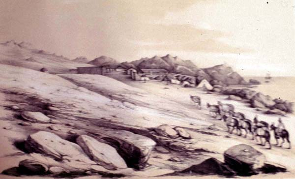

|
|  |
|
Rodolpho A. Philippi, Chañaral de las ánimas
|
While the American landscape was turned into the founding site of a national aesthetics by the work of Creole letrados, from Andrés Bello´s neoclassical Silvas, in particular the programmatic poem A la agricultura de la zona torrida (1826), to the romantic poetry of the journal Niterói, revista brasiliense of the 1830s, likewise composed in European exile, and the contemporary work of Esteban Echeverría, the enlightened governments that had come to power immediately after independence enlisted the services of European men of science to survey, collect and classify the natural resources of the nation-state. In Brazil, a group of Austrian naturalists accompanied the Habsburg empress Leopoldina on her way to Rio de Janeiro, to travel on into the interior and produce the first national botany and zoology; in Argentina, an Italian physicist was hired to produce a collection and catalogue of the national fauna and flora, and in Chile, the French geographer Claude Gay was appointed in 1830 by the conservative government to travel across the country, collect specimens and geographical data, and to produce on the grounds of his findings a national atlas and revive the fledgling national museum. By mid-century, following periods of institutional instability and civil war that had spurned the initial efforts, a second generation of foreign naturalists including the Germans Rudolph A. Philippi and Karl Hermann Burmeister was enlisted to run the national museums of Chile and Argentina, respectively, and to revive and intensify the initial efforts to map, collect, classify, and exhibit the nature of the nation-state.
|